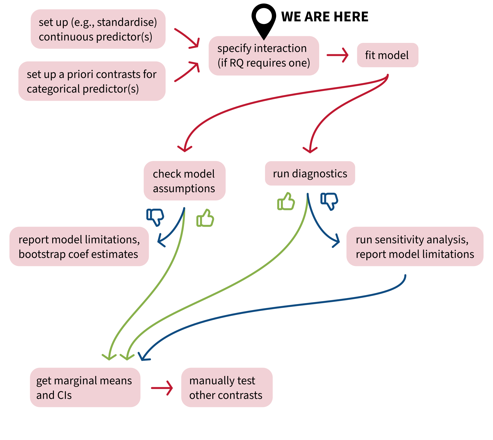
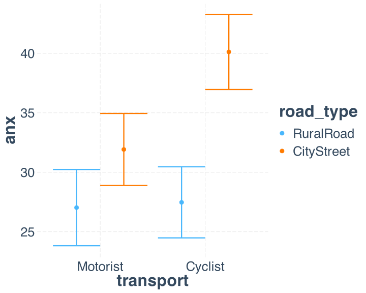
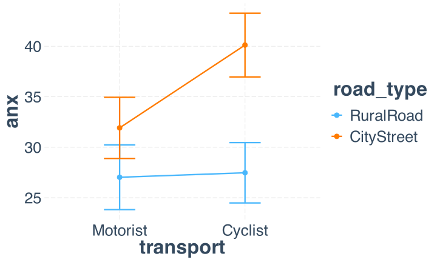
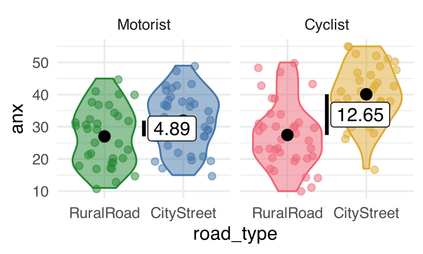
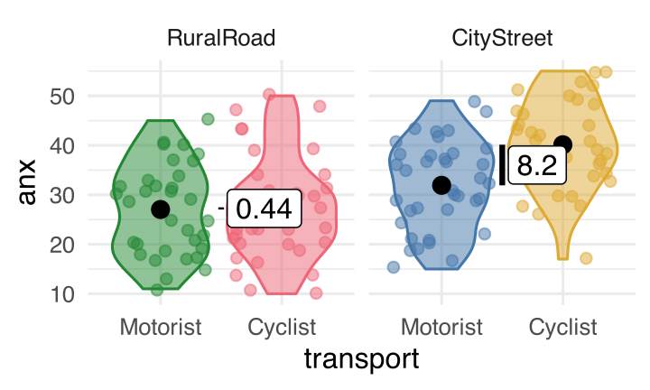
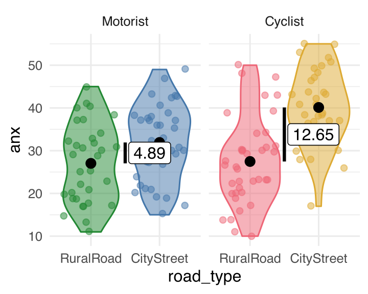

Department of Psychology University of Edinburgh 2025–2026
Course Overview
Introduction to linear Models
Intro to linear regression
Interpreting linear models
Testing individual predictors
Model testing & comparison
Linear model analysis
Analysing Experimental Studies
Categorical predictors and dummy coding
Effect coding and manual post-hoc contrasts
Assumptions and diagnostics
Bootstrapping and confidence intervals
Categorical predictors: Practice analysis
Interactions
Mean-centering and numeric/categorical interactions
Numeric/numeric interactions
Categorical/categorical interactions
Manual contrast interactions and multiple comparisons
Interactions: Practice analysis
Advanced Topics
Power analysis
Binary logistic regression I
Binary logistic regression II
Logistic regression: Practice analysis
Exam prep and course Q&A
Tech check and warm-up
wooclap.com, enter code GECHXE
This week’s learning objectives
What does the interaction coefficient of a linear model mean?
If we know the contrast coding for two interacting categorical predictors, how do we work out the coding of the interaction term?
What’s the difference between a “simple slope” and a “simple effect”?
How can we calculate how many interaction terms a model will have when two categorical predictors interact?
Where we are in the analysis plan today

What’s an interaction again?
An interaction is how we allow a model to estimate that the association between one predictor and the outcome is different, depending on the value of another predictor.
Today’s data
Post-travel anxiety ratings for people using two different kinds of transport:
When we had continuous predictors, we used probe_interaction() from the interactions library.
Now that we have only categorical predictors, we must use cat_plot() instead.
cat_plot( m1,pred = transport,modx = road_type,)

If you like to think about interactions in terms of differences in vertical distances between two groups, then this way of visualising things might work for you.
Visualising the model’s estimates (2)
cat_plot() can also link each group mean with lines, using the argument geom = "line".
This is the equation for the blue line in this plot:

When we ask for a “simple effect”, we ask for the slope of this line: the difference between groups at a specific level of another predictor. So here, the simple effect is 0.44.
The simple effect of transport for city streets
City streets are represented by road_type = 1, so we substitute 1 for \(\text{road_type}\) below.
For Motorists on RuralRoads (i.e., at the reference levels of transport and road_type, where all predictors = 0), the estimated average anx is 27.03 points.
transportCyclist (same as before)
Specifically at the reference level of road_type (RuralRoad), being a cyclist is associated with an increase in anxiety of 0.44 points.
road_typeCityStreet (same as before)
Specifically at the reference level of transport (Motorist), being on city streets is associated with an increase in anxiety of 4.89 points.
road_typeDualCarr (new!)
Specifically at the reference level of transport (Motorist), being on dual carriageways is associated with an increase in anxiety of 6.02 points.
Why do we need more than one interaction term to capture how these predictors interact?
wooclap.com, enter code GECHXE
The big picture: Interactions
The big picture: Interactions
Whenever one predictor’s association with the outcome depends on another predictor, then we’re dealing with interactions.
Beyond two-way interactions
So far, we’ve been focusing on interactions between two predictors, called “two-way interactions”.
But in principle, we could throw another variable into the mix:
Maybe countries with different amounts of bike infrastructure differ in the anxiety that cyclists vs. motorists feel on different road types.
This would be a three-way interaction between country, transport, and road type.
My advice to you: Try not to design studies that involve three-way interactions.
They are tricky to interpret.
The three-way interaction term itself is often a fairly small number, and we usually don’t have enough statistical power to reliably detect it.
Back matter
Revisiting this week’s learning objectives
What does the interaction coefficient of a linear model mean?
How the slope of one predictor changes, when the other predictor goes from 0 to 1. (This interpretation applies to all kinds of predictors, both continuous and categorical.)
The interaction term is not a slope on its own. It is an adjustment value that we add to one of the predictor’s slopes.
If we have two interacting predictors, A and B, then the interaction term tells us
how much does the association between A and the outcome (i.e., the slope of A) change, when B goes from 0 to 1?
how much does the association between B and the outcome (i.e., the slope of B) change, when A goes from 0 to 1?
If we know the contrast coding for two interacting categorical predictors, how do we work out the coding of the interaction term?
Get all combinations of levels in the interacting predictors.
Multiply each pair of coding values together (i.e., get the product of each pair of values).
The resulting list of numbers is the coding of the interaction.
Revisiting this week’s learning objectives
What’s the difference between a “simple slope” and a “simple effect”?
The only difference is what kind of predictor we’re looking at.
Simple effects: The association of a categorical predictor with the outcome, at a specific value of another predictor (either categorical or continuous).
Simple slopes: The association of a continuous predictor with the outcome, at a specific value of another predictor (either categorical or continuous).
How can we calculate how many interaction terms a model will have when two categorical predictors interact?
Based on how many levels each predictor has.
\[
(r - 1) \times (c - 1)
\]
\(r\) is the number of levels in the first interacting predictor.
\(c\) is the number of levels in the second interacting predictor.
This week
Tasks:
Attend your lab and work together on the exercises
Support:
Help each other on the Piazza forum
Complete the weekly quiz
Attend office hours (see Learn page for details)
Appendix
Key insight: The difference between differences is the same both ways
One way:

\[
12.65 - 4.89 = 7.76
\]
Another way:

\[
8.2 - 0.44 = 7.76
\]
No matter which angle we look at the interaction data from, the difference between differences—which appears in the model as the coefficient of the interaction term—is the same.
As we saw last week: interactions are symmetrical.
(In practice, people usually only report the angle that makes the most sense for their research question.)
Difference of differences 1

(Motorist and RuralRoad are the reference levels)
Group means:
RuralRoad
CityStreet
Motorist
27.03
31.92
Cyclist
27.47
40.12
For motorists, the difference between city and rural: